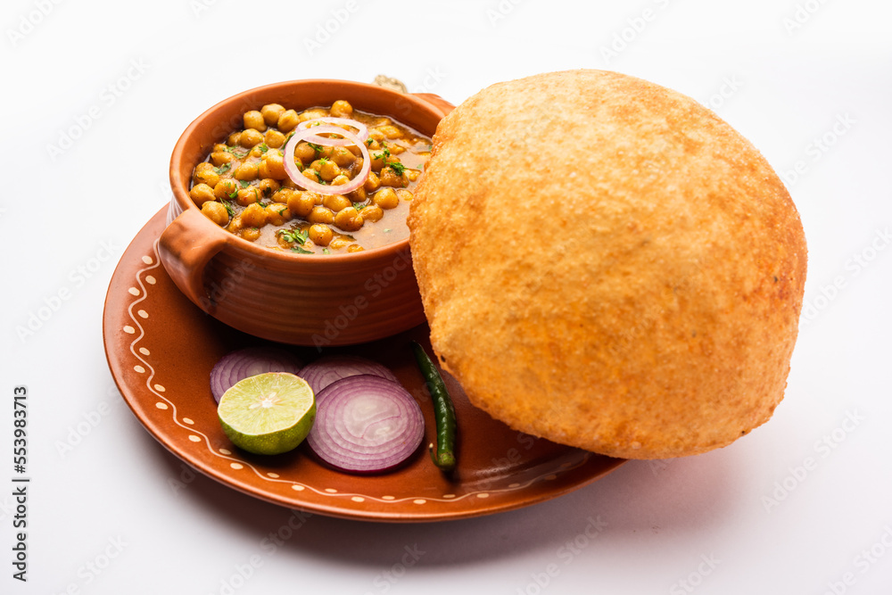

Chole Bhature Recipe
Ingredients:
- 1 cup dried chickpeas (chole), soaked overnight
- 2 onions, finely chopped
- 2 tomatoes, finely chopped
- 1 inch ginger, grated
- 4 cloves garlic, minced
- 2 green chilies, chopped
- 1 teaspoon cumin seeds
- 1 teaspoon coriander powder
- 1/2 teaspoon turmeric powder
- 1/2 teaspoon red chili powder
- 1/2 teaspoon garam masala
- 1 teaspoon dried mango powder (amchur)
- 1 tablespoon oil or ghee
- Salt to taste
Instructions:
- Prepare the Chole:
- Pressure cook the soaked chickpeas with salt until soft and tender.
- In a separate pan, heat oil or ghee. Add cumin seeds and let them splutter.
- Add chopped onions and sauté until golden brown.
- Add ginger, garlic, and green chilies. Sauté until the raw smell disappears.
- Add chopped tomatoes and cook until they turn mushy.
- Add coriander powder, turmeric powder, red chili powder, garam masala, and dried mango powder. Mix well.
- Add cooked chickpeas along with the water from the pressure cooker. Mix and simmer for 10-15 minutes until the gravy thickens.
- Prepare the Bhature:
- Prepare the dough by mixing flour, yogurt, oil, salt, and a pinch of baking powder. Knead into a soft dough.
- Cover and let the dough rest for at least 2 hours.
- Divide the dough into small balls and roll them out into circles.
- Deep fry the rolled dough in hot oil until they puff up and turn golden brown.
Serving Tips:
Serve the Chole Bhature hot, garnished with chopped onions, green chilies, and a squeeze of lemon. Enjoy with a side of pickles or yogurt raita.
Ratings and Reviews
Average rating: 0/5